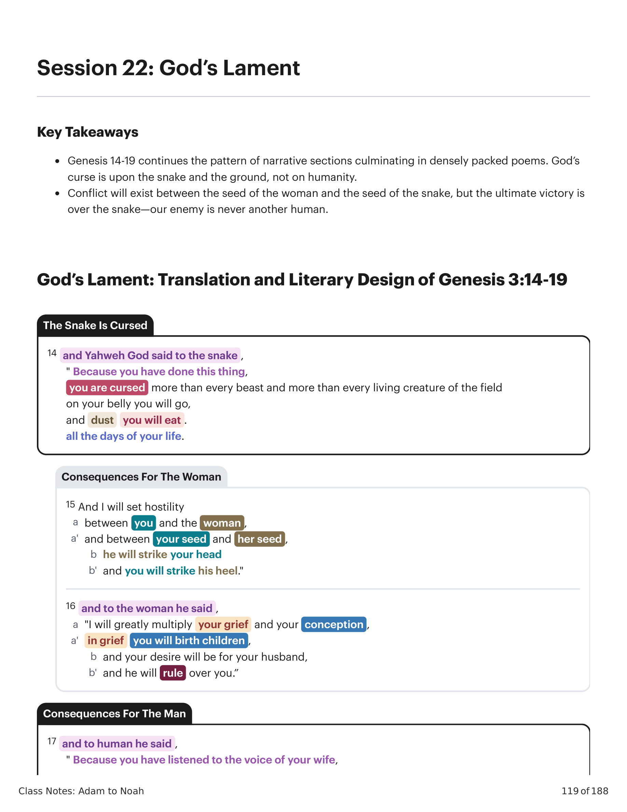
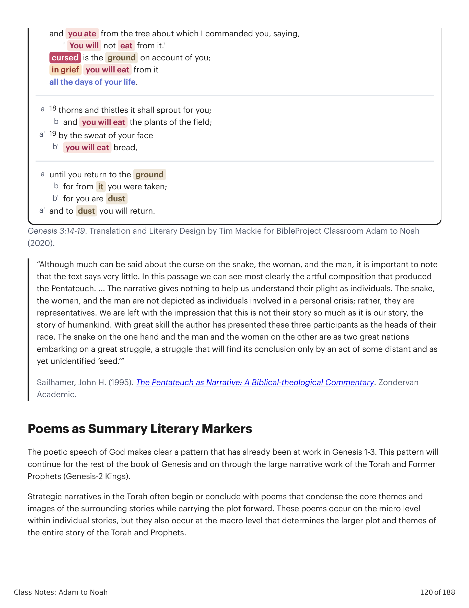

"Embora muito possa ser dito sobre a maldição sobre a serpente, a mulher e o homem, é importante notar que o texto diz muito pouco. Nesta passagem podemos ver mais claramente a composição artística que produziu o Pentateuco. ... A narrativa não dá nada para nos ajudar a entender sua situação como indivíduos. A serpente, a mulher e o homem não são retratados como indivíduos envolvidos em uma crise pessoal; em vez disso, são representantes. Ficamos com a impressão de que esta não é tanto a história deles quanto a história da humanidade. Com grande habilidade o autor apresentou estes três participantes como as cabeças de sua raça. A serpente de um lado e o homem e a mulher do outro são como duas grandes nações embarcando em uma grande luta, uma luta que encontrará sua conclusão apenas por um ato de algum 'descendente' distante e ainda não identificado.""Although much can be said about the curse on the snake, the woman, and the man, it is important to note that the text says very little. In this passage we can see most clearly the artful composition that produced the Pentateuch. ... The narrative gives nothing to help us understand their plight as individuals. The snake, the woman, and the man are not depicted as individuals involved in a personal crisis; rather, they are representatives. We are left with the impression that this is not their story so much as it is our story, the story of humankind. With great skill the author has presented these three participants as the heads of their race. The snake on the one hand and the man and the woman on the other are as two great nations embarking on a great struggle, a struggle that will find its conclusion only by an act of some distant and as yet unidentified 'seed.'"
Sailhamer, John H. (1995). O Pentateuco como Narrativa: Um Comentário Bíblico-Teológico. Zondervan Academic.Sailhamer, John H. (1995). The Pentateuch as Narrative: A Biblical-theological Commentary. Zondervan Academic.
O discurso poético de Deus deixa clara uma padrão que já estava em ação em Gênesis 1-3. Este padrão continuará pelo resto do livro de Gênesis e adiante pela grande obra narrativa da Torá e dos Profetas Anteriores (Gênesis-2 Reis). Narrativas estratégicas na Torá frequentemente começam ou concluem com poemas que condensam os temas e imagens centrais das histórias ao redor enquanto levam a trama adiante. Estes poemas ocorrem no nível micro dentro de histórias individuais, mas também ocorrem no nível macro que determina a trama e os temas maiores de toda a história da Torá e dos Profetas.The poetic speech of God makes clear a pattern that has already been at work in Genesis 1-3. This pattern will continue for the rest of the book of Genesis and on through the large narrative work of the Torah and Former Prophets (Genesis-2 Kings). Strategic narratives in the Torah often begin or conclude with poems that condense the core themes and images of the surrounding stories while carrying the plot forward. These poems occur on the micro level within individual stories, but they also occur at the macro level that determines the larger plot and themes of the entire story of the Torah and Prophets.
Cada um destes poemas enigmáticos resume os temas da narrativa até aquele ponto, e cada poema também dirige a atenção do leitor para os temas principais na história seguinte.Each of these riddle-like poems summarizes the themes of the narrative up to that point, and each poem also directs the reader's attention to the main themes in the following story.
| Poems as Summary Literary Markers | ||
|---|---|---|
| ' You will not eat from it.' in grief you will eat from it all the days of your life. | and you ate from the tree about which I commanded you, saying, cursed is the ground on account of you; and you will eat the plants of the field; b | The poetic speech of God makes clear a pattern that has already been at work in Genesis 1-3. This pattern will continue for the rest of the book of Genesis and on through the large narrative work of the Torah and Former |
| 18 thorns and thistles it shall sprout for you; a | Strategic narratives in the Torah often begin or conclude with poems that condense the core themes and images of the surrounding stories while carrying the plot forward. These poems occur on the micro level within individual stories, but they also occur at the macro level that determines the larger plot and themes of | |
| 19 by the sweat of your face a' you will eat bread, b' until you return to the ground a for from it you were taken; b for you are dust b' and to dust you will return. a' | Class Notes: Adam to Noah 120 of 188 | |
| Prophets (Genesis-2 Kings). | ||
| the entire story of the Torah and Prophets. |
Observe que a serpente é a única que é amaldiçoada em Gênesis 3:14-15: "Sobre o teu ventre irás, comerás pó." Esta é uma imagem de humilhação e derrota (Mq 7:17) que é retomada por autores bíblicos posteriores ao descreverem a era messiânica (Is 65:25). As reflexões de John Sailhamer sobre Gênesis 3:15 estão repletas de discernimento sobre este tema.Notice the snake is the only one cursed in Genesis 3:14-15: "On your belly you will go, you will eat dust." This is imagery of humiliation and defeat (Mic. 7:17) that is drawn upon by later biblical authors when they depicted the messianic age (Isa. 65:25). John Sailhamer's reflections on Genesis 3:15 are full of insight on this topic.
"Como representantes, a serpente e a mulher encarnam o destino da sua descendência, e o destino da sua descendência é também o seu próprio destino... No início do versículo 15, diz-se que a 'inimizade' foi posta entre a serpente e a mulher e entre a 'descendência' da serpente e a 'descendência' da mulher. Mas a segunda metade do versículo 15 declara que a 'descendência' da mulher ('ele') esmagará a cabeça da serpente ('tua cabeça'). ... Embora a 'inimizade' possa estar entre as duas 'descendências', o alvo do golpe final de esmagamento não é a 'descendência' da serpente, mas sim a própria serpente — a sua cabeça será esmagada. Em outras palavras, parece que o autor tem a intenção de tratar a serpente e a sua 'descendência' juntas, como uma só. O que acontece à sua 'descendência' num futuro distante pode dizer-se que acontece também à serpente. Essa identificação sugere que o autor vê a serpente em termos que vão além daquela serpente específica do Jardim. Para o autor, a serpente é representante de alguém ou de algo mais, e é representada pela sua 'descendência.' Quando essa 'descendência' é esmagada, a cabeça da serpente é esmagada. Consequentemente, há mais em jogo nesta breve passagem do que o leitor percebe a princípio. Um programa é estabelecido. Uma trama é traçada que levará o autor muito além desta ou daquela serpente e da sua 'descendência.' É o que a serpente e a sua 'descendência' representam que está no centro do foco do autor. Com aquele 'um' repousa a 'inimizade' que deve ser esmagada... Se se olha para a passagem dentro do escopo mais amplo do propósito do Pentateuco... muito mais parece estar contido nestas palavras... É provável que o autor pretenda que estas palavras sejam lidas como programáticas e fundamentais para o estabelecimento da trama e da caracterização do restante do livro. Na narrativa que se segue, haverá guerra ('inimizade'). Os dois lados são representados por duas descendências, a 'descendência' da serpente e a 'descendência' da mulher. Na batalha que se trava, a 'descendência' da mulher esmagará a cabeça da serpente. Embora ferida na luta, a 'descendência' da mulher sairá vitoriosa. Resta neste versículo uma ambiguidade intrigante, porém importante: Quem é a 'descendência' da mulher? Parece óbvio que o propósito do versículo 15 não foi responder a essa pergunta, mas sim suscitá-la. O restante do livro é, de fato, a resposta do autor.""As representatives, the snake and the woman embody the fate of their seed, and the fate of their seed is their fate as well ... At first in verse 15 the 'enmity' is said to have been put between the snake and the woman and between the 'seed' of the snake and the 'seed' of the woman. But the second half of verse 15 states that the 'seed' of the woman ('he') will crush the head of the snake ('your head'). ... Though the 'enmity' may lie between the two 'seeds,' the goal of the final crushing blow is not the 'seed' of the snake but rather the snake itself—his head will be crushed. In other words, it appears that the author is intent on treating the snake and his 'seed' together, as one. What happens to his 'seed' in the distant future can be said to happen to the snake as well. This identification suggests that the author views the snake in terms that extend beyond this particular snake of the Garden. The snake, for the author, is representative of someone or something else, and is represented by his 'seed.' When that 'seed' is crushed, the head of the snake is crushed. Consequently, more is at stake in this brief passage than the reader is at first aware. A program is set forth. A plot is established that will take the author far beyond this or that snake and his 'seed.' It is what the snake and his 'seed' represent that lies at the center of the author's focus. With that 'one' lies the 'enmity' that must be crushed ... If one looks at the passage within the larger scope of the purpose of the Pentateuch ... much more appears to lie in these words ... It seems likely that the author intends these words to be read as programmatic and foundational for the establishment of the plot and characterization of the remainder of the book. In the narrative to follow, there is to be war ('enmity'). The two sides are represented by two seeds, the 'seed' of the snake and the 'seed' of the woman. In the ensuing battle, the 'seed' of the woman will crush the head of the snake. Though wounded in the struggle, the woman's 'seed' will be victorious. There remains in this verse a puzzling yet important ambiguity: Who is the 'seed' of the woman? It seems obvious that the purpose of verse 15 has not been to answer that question, but rather to raise it. The remainder of the book is, in fact, the author's answer."
Sailhamer, John H. (1995). O Pentateuco como Narrativa: Um Comentário Bíblico-Teológico. Zondervan Academic.Sailhamer, John H. (1995). The Pentateuch as Narrative: A Biblical-theological Commentary. Zondervan Academic.
Quem ou o que é amaldiçoado em Gênesis 3:14-19? Quem ou o que não é amaldiçoado?Who or what is cursed in Genesis 3:14-19? Who or what is not cursed?